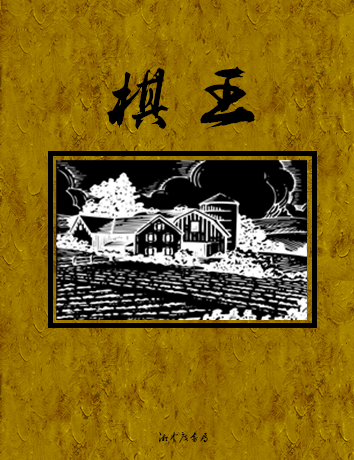
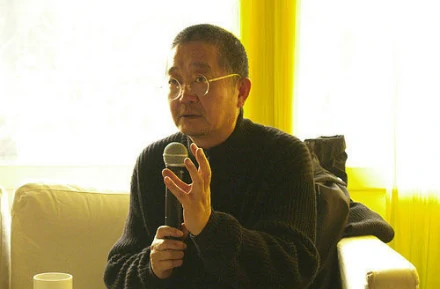

书籍分享--《棋王》

《棋王》是当代作家阿城创作的短篇小说，1984年发表
于《上海文学》小说，被视作是新时期“寻根文学”的发韧之作。故事
讲述了在文革时代，知青“棋呆子”王一生四处寻找对手下棋、拼棋的
故事。小说语言抛弃了20世纪80年代惯有的语言逻辑转而回归宋明
小说的语境之中，朴实而飘逸俊美。
故事发生在文革时期，主人公“我”申请下乡成功，在上火
车坐下的时候遇到一个棋呆子王一生，在众人皆因离别而伤感的时候棋
呆子却邀请“我”下象棋，“我”无聊故而与其下棋。棋没下多久“我”便
放弃认为此时下棋不合时宜，王一生则没有办法只得软下身子去。在旅
途中的王一生不是下棋就是求着“我”讲故事，而“我”和他就在这之中
熟识。下车之后两人被分在不同的农场。在不久之后，王一生过来寻找
对手，“我”介绍了队里的高手脚卵给他。脚卵和王一生厮杀了半夜却没
有赢王一生一盘棋，因此对王一生产生了敬佩之情。他劝王一生参加运
动会去会会县里的高手，王一生欣然同意。可是等王一生去报名的时候
，却因为经常请假四处斗棋而被知青领导取消了参赛资格。脚卵通过关
系让王一生可以参赛，王一生却不想欠别人人情拒绝了，运动会结束之
后，王一生邀请前三名与之比赛。众人相与凑热闹，最后九个人同时对
战王一生，王一生经过一番苦斗之后胜了其中八位。第九位棋手希望王
一生给他老人家一个面子和棋，不要使他颜面尽失，王一生无奈同意了
。棋局结束之后众人搀扶着王一生回到了休息的地方。

在80年代前期和中期，文学界革新新力量积聚的旨在离开“十七年文学”的话
题范围和写作模式的“革新”力量，开始得到释放，创作、理论批评的创新出现“高潮”。在
这种大环境下，阿城在朋友、同事的鼓励下将自己在酒桌上叙述的故事写了下来，这个在
朋友催促下完成的小说一经发表便在文坛引起关注。
《棋王》的叙述中，平实里的玄奥颇为得体，大有道家之遗风。阿城觉得，在
一个几乎无路可走的时代，人倘还能因技艺而进入审美的愉悦和精神的愉悦层面，则精神庶
几不得荒芜，自由救赎的地方。这是道家与禅林中的古风，悠然与乱世之中。讲究造势，讲
究弱而化之、无为而无不为，这是王一生的棋道，也正是道家哲学的精义。众口相传，王一
生的棋是道家的棋，不无道理。棋道如此，王一生形象的岸然道风就不缺少根据了。王一生
被号为“棋呆子”，成天心游神驰于棋盘上的咫尺方寸之间，不谙世事，不近流俗。无论是浩
劫中派仗冲突的烽火、大串联的狂热，还是上山下乡前的离情别意、蹉跎岁月里的内伤外侮
，都似乎未曾搅动他内心的平静。他自有他的世界——“呆在棋里”，呆在那“楚河汉界”的厮杀
里。这样，他心里舒服”，可以忘掉世间那恼人的权利和路线的纷争，忘掉这种纷争造成的精
神与物质的双重围扰。他心如止水，万物自鉴，空心寥廓，复返宁谧。在那个“一句顶一万句”
的迷狂时代里，这种不迎不持、无动于衷的呆痴，这种视而不见、听而不闻的消极，这种在“
大而无当”中遨游的超脱，正是对动乱现实的一种清醒认识和明智，不愿随波逐流、合污鼓噪
的一种变相抗争。
道家哲学讲究从反面着手达到正面价值的肯定，所谓“将欲哀之，心故张之；将欲
弱之，心故强之”就是这个意思。如此看来，阿城的本意是要写王一生的大智，写他在同辈青年
中过人的聪慧，却故意先突出他的痴呆和顽愚，这不能说不是深得道家哲学强调对立面的转化和
超越的妙谛。王一生的“呆”，令人想起玄风道趣甚浓的文人骚客，如阮籍、稽康的颓，米芾的癫
，倪瓒的愚，黄公望的痴，李白的狂。他们都不随流，不合污，矢志弥坚，操守如一，有那么一
般超然于世、物残双泯的痴迷。他们都不把艺术（象棋也是一种艺术）当成谋取外在功利的手段
，而看成是解忧散怀、寄情养性的闲适和雅兴。所谓“凡人多一分世故即多生一分机智，多一分
机智即少却一分高雅，故呆而迁且痴者，其性情于艺最近，利名心急者，其艺必不工，虽工必不
能雅也”。香港新亚研究所的徐复观教授认为中国传统艺术精神的主体是道学，历史上的大画家
、大画论家、大诗人所述达到和把握的境界常常都是庄子、玄学的境界。棋王——王一生也不期而
然地通向了庄子“无听之以心，而听之以气”，在忘我的宁静中进入自然的内部机枢并与之化而为
一的境界，却是事实。王一生的棋道之所以能“先声有势，后发制人，遣龙治水，气贯阴阳”，就
在于他是把“命放在里面搏”，虚怀而物归，心静而入神。棋赛的具体过程，阿城往往一笔带过;而
刻画王一生下棋的精神面貌，却至为周详。“我”送水给王一生喝一节中关于他入神状态的精采描
写，就颇得庄子“庖丁解牛”“轮扁斲轮”的神韵。